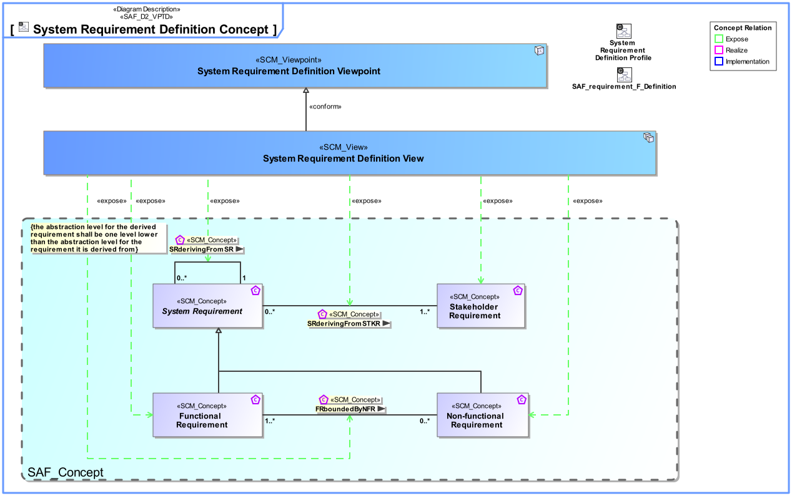
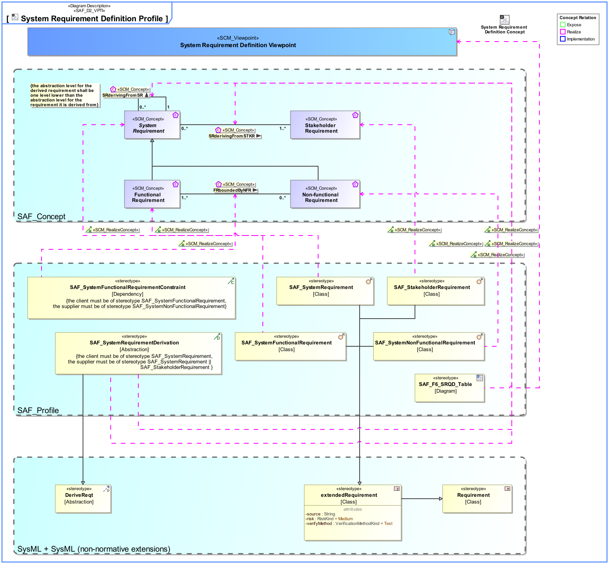
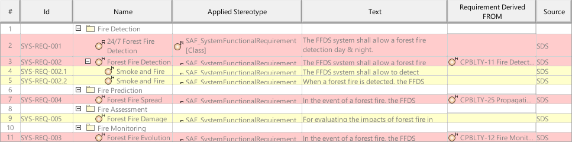

F6_SRQD System Requirement Definition Viewpoint
| Domain | Aspect | Maturity |
|---|---|---|
| Functional | Requirement |
Purpose
The System Requirement Definition Viewpoint specifies functions, non-functional properties, or constraints of the System. System Requirements are captured, the interrelationships between Functional and Non-Functional Requirements on the same level of abstraction and the traceability to Stakeholder Requirements are depicted.
Applicability
The System Requirement Definition Viewpoint supports the activities included in the “System Requirements Definition Process” of the INCOSE SYSTEMS ENGINEERING HANDBOOK 2023 [§2.3.5.3] and contributes to the System Requirements Verification and Traceability Matrix (RVTM).
Supported Processes
Supported Information Items
Presentation
A tabular format listing
- unique requirement ID, text, and attributes,
- traceability reference to Stakeholder Requirements,
- traceability reference to depended Requirements on the same level of abstraction.
Stakeholder
Concern
- What are the exchange requirements imposed on the system?
- What are the functional requirements imposed on the system?
- What are the non-functional requirements imposed on the system?
- What are the requirements of environmental conditions imposed on the system?
- What is the range of acceptable system performance, i.e. the critical, top-level performance requirements derived from the operational needs?
- Which System Requirements are derived from Stakeholder Requirements?
- Which are the interface requirements imposed on the system?
Exposed Concepts
The Diagram shows the concepts exposed by the viewpoint, and related concepts if necessary.

The Table shows the concepts exposed by the viewpoint, and related concepts if necessary.
| Concept | Documentation |
|---|---|
| Functional Requirement | Functional Requirements specify System Functions of the System. |
| Non-functional Requirement | Non-Functional Requirements specify the quality of System Functions, or non-functional requests like legal conformance. |
| FRboundedByNFR | Specifies the fact that a Non-Functional Requirement constrains Functional Requirements. |
| SRderivingFromSTKR | Specifies the fact that a System Requirement is derived from a Stakeholder Requirement. Note: It may be used in a customer supplier relationship situation and supports the V Model concept of "External Unit Specification". See [VXT]. |
| Stakeholder Requirement | A Stakeholder Requirement is a Requirement imposed by a Stakeholder. Stakeholder Concerns are refined by Stakeholder Requirements applicable for the SOI. The Stakeholder Requirements are a result of discussions and agreements of how the SOI addresses the Concerns of the respective Stakeholder. |
| SRderivingFromSR | Specifies the fact that System Requirements are derived from a Stakeholder Requirement. Note: This is the relationship of requirements of different architectural levels. When the team responsible for the subsystem has direct access to the full upstream requirements set, then no subcontractor relationship needs to be established. |
Realization of exposed Concepts
The Diagram shows the realization of exposed concepts.

The Table shows the realization of exposed concepts.
Related Viewpoints
Required Viewpoints
Recommended Viewpoints
Example
